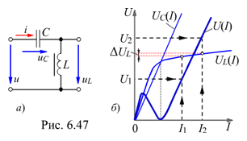
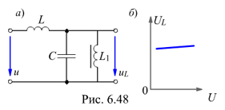

6.5.3. Феррорезонансные стабилизаторы напряжения
Феррорезонансные стабилизаторы напряжения служат для поддержания уровня синусоидального напряжения на зажимах приёмника при изменении напряжения питающей сети. Основная часть всех стабилизаторов состоит из линейного конденсатора и нелинейной катушки с ферромагнитным сердечником, соединенных между собой последовательно или параллельно.
При последовательном соединении конденсатора С и катушки L (рис. 6.47, а), выходное напряжение стабилизатора равно разности между напряжением сети и напряжением на конденсаторе, т. е.
 UL = U - UC,
при этом U = |UL - UC|.
Зная ёмкость С конденсатора и характеристику UL = f(I) катушки, можно построить (рис. 6.47, б) зависимость U = |UL - UC| = f(I), где UC - напряжение на конденсаторе. Предположим, что напряжение сети изменилось от U2 до U1. Тогда, пользуясь кривыми U(I) и UL(I), можно найти соответствующие значения выходного напряжения UL2 и UL1. При этом значениям U2 и UL2 соответствует ток I2, а значениям U1 и UL1 - ток I1. Из рис. 6.47, б видно, что значительное изменение напряжения DU = U2 - U1 влечёт за собой сравнительно малое изменение выходного напряжения DUL = UL2 - UL1; стабилизатор будет тем лучше, чем более пологой является конечная часть характеристики катушки.
На практике часто применяют схему стабилизатора (рис. 6.48, а), в которой линейная катушка L с ненасыщенным магнитопроводом включена последовательно с нелинейной цепью, состоящей из параллельно соединенных конденсатора С и катушки L1 с насыщенным ферромагнитным сердечником. В результате получают почти полную стабилизацию напряжения. Заметим, что подключение нагрузки к стабилизатору ухудшает характеристику UL(U) (рис. 6.48, б), делая её менее пологой.